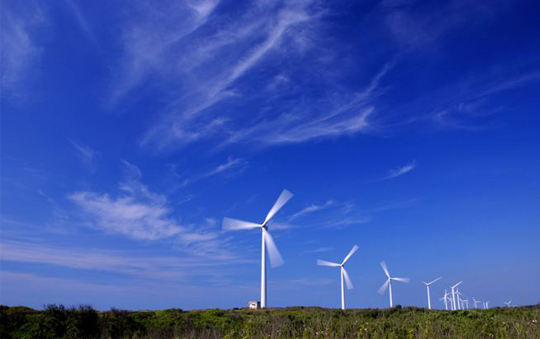
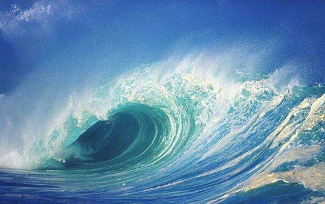

水电站
英文：hydroelectric power station /hydropower plant (HPP)，水电站是将水能转换为电能的综合工程设施，又称水电厂。它包括为利用水能生产电能而兴建的一系列水电站建筑物及装设的各种水电站设备。有些水电站除发电所需的建筑物外，还常有为防洪、灌溉、航运、过木、过鱼等综合利用目的服务的其他建筑物。这些建筑物的综合体称水电站枢纽或水利枢纽。
英文：hydroelectric power station /hydropower plant (HPP)，水电站是将水能转换为电能的综合工程设施，又称水电厂。它包括为利用水能生产电能而兴建的一系列水电站建筑物及装设的各种水电站设备。有些水电站除发电所需的建筑物外，还常有为防洪、灌溉、航运、过木、过鱼等综合利用目的服务的其他建筑物。这些建筑物的综合体称水电站枢纽或水利枢纽。
风能是指空气流动所产生的动能。太阳能的一种转化形式。由于太阳辐射造成地球表面各部分受热不均匀，引起大气层中压力分布不平衡，在水平气压梯度的作用下，空气沿水平方向运动形成风。风能资源的总储量非常巨大，一年中技术可开发的能量约5.3X10^13千瓦时。风能是可再生的清洁能源，储量大、分布广，但它的能量密度低（只有水能的1/800），并且不稳定。在一定的技术条件下，风能可作为一种重要的能源得到开发利用。风能利用是综合性的工程技术，通过风力机将风的动能转化成机械能、电能和热能等。
海洋能指依附在海水中的可再生能源，海洋通过各种物理过程接收、储存和散发能量，这些能量以潮汐能、波浪能、温差能、盐差能、海流能等形式存在于海洋之中。 海洋能的利用是指利用一定的方法、设备把各种海洋能转换成电能或其他可利用形式的能。海洋能的形式主要有潮汐能、波浪能、温差能、盐差能、海流能、海风能、海洋热能等多种能源形式，我国领海广阔蕴藏着丰富的海洋能，由于海洋能具有可再生性和不污染环境等优点，是一种亟待开发的具有战略意义的新能源，是实现我国海岸和海岛经济的可持续发展战略的重大保障。
中国政府网 | 关于本网 | 网站声明 | 网站地图 | 联系我们 | 网站纠错
网站单位：国务院办公厅 网站运行维护单位：中国政府网运行中心
相关链接：全国人大 | 全国政协 | 国家监察委员会 | 最高人民法院 | 最高人民检察院
网站标识码bm00000000 京ICP备88888888号 京公网安备88888088888888号

中国政府网微信、微博